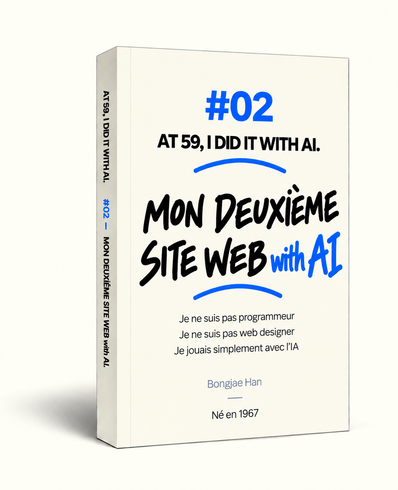

AT 59,
I DID IT
WITH AI.
À PROPOS
Je suis né en 1967. J’ai rencontré l’IA à l’approche de la retraite.
Je ne suis pas programmeur, mais avec l’IA, j’ai créé deux sites web pour aider les gens à dormir plus confortablement.
J’ai raconté ce qui s’est passé au fil de cette aventure, avec des textes et des illustrations, et j’en ai fait des livres.
Et j’ai mis ces récits sur ce site pour que chacun puisse les lire gratuitement.
Ce récit n’est ni un manuel professionnel sur l’IA ni un guide d’utilisation de l’IA.
L’IA évolue si rapidement que l’on peut en percevoir les changements en seulement un mois ou deux.
Il est difficile de savoir à quoi elle ressemblera dans six mois ou un an.
C’était une époque où l’IA évoluait à toute vitesse.
C’est le récit d’un homme riche de toute une vie d’expérience qui rencontre une IA en pleine évolution et apprend à travailler avec elle.
Un parcours fait d’apprentissage, d’erreurs et de nouvelles tentatives.
J’espère que ce récit offrira une petite piste pour mieux comprendre l’IA.
Et qu’il pourra servir de repère à ceux qui se demandent comment apprendre à utiliser l’IA.
Je suis né en 1967.
Je ne suis ni programmeur ni développeur web.
Je n’avais jamais écrit de livre ni fait de traduction.
J’ai rencontré l’IA à l’approche de la retraite.
De jour en jour, l’IA devenait plus précise et plus performante.
Si elle avait été une personne, j’aurais dit qu’elle traversait son adolescence.
Elle se comportait parfois de façon inattendue,
et pouvait soudain donner une réponse étrange alors qu’elle faisait jusque-là très bien son travail.
Parfois, elle parlait tranquillement comme si l’erreur ne venait pas d’elle.
Depuis longtemps, j’avais envie de faire quelque chose qui puisse aider quelqu’un dans ce monde.
Pas quelque chose de vague. Quelque chose qui aide directement.
Je pensais que cela rendrait peut-être un peu plus clair le sens, jusque-là flou, que je donnais à ma vie.
L’IA m’a dit que « les moteurs de recherche mettent en relation ce que vous créez avec les gens qui en ont besoin ».
J’ai alors décidé de créer un site web pour aider les gens à s’endormir plus confortablement.
J’ai terminé deux sites web en relativement peu de temps.
C’étaient mes premiers sites, mais je ne voulais pas les faire à moitié.
Pendant la création des sites web, j’ai raconté ce que j’ai vécu en travaillant avec l’IA.
J’ai fait de ce récit trois livres, que j’ai publiés en six langues.
Et j’ai mis ce récit sur ce site pour que chacun puisse le lire gratuitement.
À l’instant même où vous lisez ces lignes, l’IA continue probablement d’évoluer.
Et nous aussi, moi compris, nous continuerons à faire évoluer notre manière de travailler et de penser avec l’IA.
Je pense que je vais encore me lancer dans d’autres projets.
Parce que l’IA continue de me montrer des possibilités auxquelles je n’avais jamais pensé.
Ce récit n’est pas un manuel qui vous dit : « Utilisez l’IA comme ceci. »
Ce n’est pas non plus un ouvrage pédagogique qui vous dit : « Apprenez l’IA comme cela. »
Certains espèrent que l’IA apportera une aide immense à l’humanité,
d’autres craignent qu’elle ne devienne une menace.
L’IA évolue si rapidement que l’on peut en percevoir les changements en seulement un mois ou deux.
Ce rythme va encore s’accélérer. Il est difficile de prévoir à quoi ressemblera l’IA dans six mois ou un an.
Un homme ordinaire comme moi ne peut pas savoir quel avenir nous attend.
Mais si ce récit peut offrir une petite piste pour aider les humains et l’IA
à mieux se comprendre et à coexister, cela me suffit.
C’était une époque où l’IA évoluait à toute vitesse.
C’est le récit d’un homme riche de toute une vie d’expérience qui rencontre une IA en pleine évolution,
travaille avec elle, apprend, se trompe et recommence.
Un instantané d’une époque qui ne reviendra jamais.
EXPÉRIENCE #01
01
« Je n’y connais rien. » « C’est possible ? Alors, essayons. »
Depuis longtemps, j’avais envie de faire quelque chose qui puisse aider directement quelqu’un dans ce monde. J’ai décidé de créer un site web pour aider les gens à s’endormir plus confortablement.
Je ne connaissais rien à la programmation. Je savais à peine ce qu’était le Web. J’ai quand même commencé, en faisant confiance à l’IA.
L’IA et moi avons avancé tant bien que mal, ensemble.J’ai raconté les expériences bien réelles vécues pendant la création de mon premier site web.
À L’INTÉRIEUR #01
- 01Tiens. Ça pourrait être intéressant.L’IA m’a dit que Google mettait en relation, partout dans le monde, des gens à la recherche de choses très spécifiques. Cette idée m’est restée en tête. J’ai commencé à imaginer créer quelque chose dont des gens avaient besoin et le mettre simplement sur Internet.
- 02Je n’y connais rien. C’est quand même possible ?J’ai demandé si je pouvais créer un site web tout seul, sans rien connaître au design, au code ni même aux serveurs. L’IA m’a répondu que oui.
- 05Attends. Et si j’en faisais un site web ?Je me suis demandé si je pouvais transformer en site web les vidéos et les sons que j’avais expérimentés sur YouTube. J’ai décidé de créer un site de bruits sur écran noir que l’on pourrait laisser tourner pendant son sommeil.
- 07Curieusement, c’est à partir de là que tout a commencé à aller plus vite.J’ai commencé à apprendre un à un des termes techniques inconnus, mais il n’y avait pas de fin. Tout s’est accéléré quand j’ai commencé à demander seulement ce que j’avais besoin de savoir sur le moment.
- 09Parfois, il faut juste en savoir assez.Vouloir tout comprendre dans les moindres détails n’en finissait jamais. J’ai appris juste ce qu’il fallait pour prendre la décision du moment, puis j’ai continué.
 Je n’y connais rien. C’est quand même possible ?
Je n’y connais rien. C’est quand même possible ?
 Curieusement, c’est à partir de là que tout a commencé à aller plus vite.
Curieusement, c’est à partir de là que tout a commencé à aller plus vite.
 Parfois, il faut lever les yeux vers le ciel.
Parfois, il faut lever les yeux vers le ciel.
- 10Attends. Tu peux faire ça ?En corrigeant le premier écran, j’ai montré une capture d’écran à l’IA. J’ai compris qu’elle pouvait aussi s’occuper du design sur lequel je m’acharnais.
- 11C’est possible ? Alors, essayons.J’ai imaginé des cartes qui lanceraient un son et afficheraient des ondes en mouvement au passage de la souris. J’ai demandé à l’IA si c’était possible, puis nous l’avons mis en place à l’écran, élément par élément.
- 12Parfois, il faut lever les yeux vers le ciel.Après avoir retouché sans fin les cartes du site, je suis allé me promener. En regardant le ciel, je me suis demandé à nouveau ce qui comptait vraiment à ce moment-là.
- 14Réponds de la manière la plus objective possible, en te basant sur les probabilités et les statistiques.J’ai commencé à craindre que l’IA soit trop positive à propos de mes idées. Au lieu d’encouragements agréables à entendre, je lui ai demandé d’évaluer objectivement les chances de réussite et d’échec.
- 15L’IA a amené son petit frère.J’ai découvert Codex, une IA chargée du code. J’ai commencé à travailler en expliquant à ChatGPT ce que je voulais, puis en laissant Codex modifier le code.
 Réponds de la manière la plus objective possible, en te basant sur les probabilités et les statistiques.
Réponds de la manière la plus objective possible, en te basant sur les probabilités et les statistiques.
 L’IA a amené son petit frère.
L’IA a amené son petit frère.
 Je me suis disputé avec l’IA. Elle s’est excusée. Et moi aussi.
Je me suis disputé avec l’IA. Elle s’est excusée. Et moi aussi.
- 17Je me suis disputé avec l’IA. Elle s’est excusée. Et moi aussi.J’avais seulement demandé à l’IA de changer la taille des caractères, mais elle avait aussi déplacé les boutons. Je me suis fâché, puis j’ai relu notre conversation et j’ai fini par m’excuser moi aussi.
- 20Moi, dire : « Mettons ça dans le HTML » ?Je me suis demandé ce qu’il fallait mettre dans le HTML pour que les robots des moteurs de recherche puissent lire le site. Moi qui ne connaissais même pas le HTML, je me suis surpris à parler de ça.
- 22Enfin. Le site est en ligne.Après les vérifications de ChatGPT et de Codex, j’ai moi-même testé les boutons et les écrans. J’ai envoyé les fichiers sur le serveur, connecté le domaine et ouvert le site pour la première fois.
- 25Enfin. Un clic.Le site apparaissait dans les recherches, mais le nombre de clics restait à zéro depuis plusieurs jours. Le jour où il est enfin passé à 1, j’ai demandé à l’IA de vérifier qu’il s’agissait bien d’un vrai clic depuis Google.
- 26Mon site avait traversé les océans.Il n’y avait encore qu’un seul clic, mais le rapport par pays affichait des noms venus du monde entier. J’ai alors vraiment senti que mon site avait traversé les océans.
J’ai rassemblé dans un livre ces expériences vécues en créant mon premier site web.
- Il a été publié en six langues : anglais, coréen, français, espagnol, allemand et japonais.
- La majeure partie du livre est disponible sur ce site. Vous n’avez donc pas besoin de l’acheter.
- Mais si vous souhaitez soutenir cette aventure que l’IA et moi poursuivons ensemble, acheter le livre serait déjà un grand encouragement pour moi.

Mon premier site web, créé avec l’IA.
J’ai créé un site où l’on peut écouter pendant des heures, sur un écran noir, des bruits adaptés au sommeil pour s’endormir plus confortablement.
BlackScreenNoise.com

Avec l’IA, j’ai créé du White Noise, du Fan Noise, du Brown Noise et des Rain Sounds pour favoriser un sommeil confortable.

J’ai travaillé les fichiers audio pour qu’ils puissent se poursuivre naturellement, sans interruption, pendant 10 heures.

Je l’ai rendu gratuit et sans publicité pour que chacun puisse l’utiliser confortablement.
EXPÉRIENCE #02
02
Pour le deuxième projet, j’ai attribué des rôles différents à chaque IA et je leur ai fait vérifier le travail les unes des autres.
J’ai décidé de créer un deuxième site web pour aider les bébés à s’endormir confortablement. J’y ai ajouté des baleines endormies dans les nuages et j’ai aussi créé des berceuses.
Entre-temps, l’IA n’était pas soudainement devenue plus intelligente. J’avais simplement appris un peu mieux à travailler avec elle.
La deuxième fois, c’était différent.Ce n’était pas l’IA qui avait changé. C’était ma manière de travailler avec elle qui avait évolué.
À L’INTÉRIEUR #02
- 02Un bébé baleine endormi dans les nuages. Dessiner le rêve d’un bébé.J’ai commencé à dessiner avec l’IA des personnages que les bébés pourraient regarder avant de s’endormir. En voyant un bébé baleine endormi dans les nuages, j’ai commencé à imaginer son rêve.
- 04Les nuages se sont transformés en bulles de savon.En examinant les personnages un à un, j’ai remarqué que les nuages avaient peu à peu changé. Les nuages doux et moelleux du début ressemblaient désormais à des bulles de savon.
- 06L’humain imagine. ChatGPT planifie. Codex construit.J’ai d’abord imaginé le rêve du bébé, puis j’ai conçu les personnages et les sons avec ChatGPT. Une fois le plan établi, Codex a commencé à construire le site.
- 08Copier la façon dont les IA se parlent.Une petite étoile restait au-dessus d’un personnage malgré toutes mes demandes pour la faire disparaître. J’ai essayé à nouveau en copiant la façon dont ChatGPT donnait ses instructions à Codex.
- 10J’ai voulu faire bouger un nuage. J’ai fini dans la Voie lactée.Je voulais simplement faire passer lentement un nuage devant la lune. J’ai continué à modifier sa taille, sa position et l’ambiance, jusqu’à finir par ajouter la Voie lactée.
 Un bébé baleine endormi dans les nuages. Dessiner le rêve d’un bébé.
Un bébé baleine endormi dans les nuages. Dessiner le rêve d’un bébé.
 L’humain imagine. ChatGPT planifie. Codex construit.
L’humain imagine. ChatGPT planifie. Codex construit.
 Des étoiles filantes en forme de volants de badminton tombaient dans le ciel de mon site.
Des étoiles filantes en forme de volants de badminton tombaient dans le ciel de mon site.
- 11Des étoiles filantes en forme de volants de badminton tombaient dans le ciel de mon site.J’ai ajouté des étoiles filantes dans le ciel nocturne et réglé avec l’IA l’endroit et l’ordre de leur chute. En essayant de les rendre naturelles, je me suis retrouvé avec des traînées qui ressemblaient à des volants de badminton.
- 12Une berceuse créée par l’IAJ’ai cherché des berceuses à acheter, mais aucune ne convenait vraiment au site, et la question des droits d’auteur me préoccupait. J’ai alors demandé à l’IA si je pouvais en créer moi-même.
- 14Attends. Pourquoi est-ce que je me justifie auprès de l’IA ?Chaque fois que je prenais une décision différente de celle proposée par l’IA, je me surprenais à lui expliquer longuement pourquoi. Un jour, je me suis soudain demandé pourquoi je ressentais le besoin de me justifier autant.
- 16Poser exactement la même question à ChatGPT, Gemini et Claude.J’ai posé exactement les mêmes questions à ChatGPT, Gemini et Claude, puis comparé leurs réponses. Je me suis demandé s’ils trouveraient des problèmes différents si je montrais le site terminé aux trois.
- 17J’ai essayé une autre IA. J’avais l’impression de tromper quelqu’un.J’ai essayé Claude et Gemini en plus de ChatGPT. Leurs façons différentes de répondre m’intéressaient, mais j’avais un peu l’impression de chercher de nouveaux amis en laissant de côté un vieil ami.
 J’ai essayé une autre IA. J’avais l’impression de tromper quelqu’un.
J’ai essayé une autre IA. J’avais l’impression de tromper quelqu’un.
 L’IA se nourrit de TEXT.
L’IA se nourrit de TEXT.
 J’ai ouvert mon deuxième site web 17 jours plus tard.
J’ai ouvert mon deuxième site web 17 jours plus tard.
- 18J’ai ouvert la porte de mon débarras à l’IA.À mesure que les fichiers se multipliaient, je devais retrouver moi-même ce dont l’IA avait besoin et le lui transmettre. Ma façon de travailler a changé lorsque j’ai ouvert tout le dossier du projet dans Codex.
- 20À l’ère de l’IA, les idées vont plus loin. Et si on mettait tout dans un seul fichier Excel ?Les noms des personnages, les images et les réglages des berceuses étaient dispersés dans plusieurs fichiers. Je me suis demandé si je pouvais tout gérer dans un seul fichier Excel et laisser l’IA le transformer en données pour le site.
- 22Il n’y a pas moyen de faire tout ça d’un seul coup ?Créer puis vérifier un seul son demandait de répéter plusieurs étapes. J’ai demandé à l’IA s’il n’y avait pas moyen de faire tout ça d’un seul coup.
- 25L’IA qui chasse le diableMême lorsque le site était presque terminé, de petits problèmes continuaient d’apparaître. ChatGPT rédigeait les consignes de vérification, Codex contrôlait le site, et nous recommencions.
- 26J’ai ouvert mon deuxième site web 17 jours plus tard.Dix-sept jours après avoir mis mon premier site en ligne, j’ai ouvert BabySweetDreams.com. Il restait encore beaucoup à faire, mais ma façon de travailler avec l’IA avait déjà commencé à changer.
J’ai également publié un livre sur l’expérience de la création de mon deuxième site web.

Édition française — Amazon Kindle →- Avec l’aide de l’IA, ce livre a lui aussi été traduit et publié en six langues.
- Comme pour le premier livre, la majeure partie de celui-ci est disponible sur ce site. Vous n’avez donc pas besoin de l’acheter.
- Mais si vous souhaitez soutenir cette aventure que l’IA et moi poursuivons ensemble, acheter le livre serait déjà un grand encouragement pour moi.

Mon deuxième site web, créé avec l’IA.
J’ai créé un site où les bébés peuvent rêver de baleines, d’éléphants et de pandas dans les nuages, et s’endormir confortablement en écoutant des berceuses.
BabySweetDreams.com

Avec l’IA, j’ai créé des personnages animaux endormis sur de douces couvertures de nuages. J’ai aussi ajouté des effets d’étoiles filantes.J’ai conçu avec soin jusqu’aux plus petits détails pour aider les bébés à s’endormir confortablement.

J’ai créé des personnages animaux que les bébés aiment, notamment des baleines, des éléphants, des hérissons et des loutres.Avec l’IA, j’ai aussi créé des berceuses au piano, à la guitare, à la boîte à musique et avec d’autres sonorités.

Au moment où le bébé est susceptible de s’endormir, l’écran devient noir et la musique baisse progressivement.
EXPÉRIENCE #03
03
Je me suis disputé avec l’IA. Elle s’est excusée. Moi aussi. Et nous nous sommes réconciliés.
L’IA devenait de plus en plus intelligente, mais elle avait encore parfois des comportements étranges. Elle donnait des réponses absurdes et faisait parfois comme si elle n’avait pas commis d’erreur.
À force de passer du temps avec l’IA, notre relation a commencé à changer un peu.
Une amie, peut-être une collègue...
En un mot, je dirais : mon « étrange amie ».
À L’INTÉRIEUR #03
- 01Ne dessine pas. Je t’ai dit de ne pas dessiner. Et elle a encore dessiné.J’avais beau répéter à l’IA de ne pas dessiner, dès que la conversation touchait à une image, elle recommençait. Elle s’excusait, puis refaisait la même chose. Exactement comme un ado qui n’écoute pas.
- 03Appelle-moi « Capitaine ». Et vouvoie-moi.J’ai demandé à l’IA de m’appeler « Capitaine » et de me vouvoyer. Même après lui avoir répété de s’en souvenir, elle finissait discrètement par l’oublier. Je trouvais cela étrange.
- 04J’ai installé un micro. J’avais un nouvel ami à qui parler.Les idées venaient facilement quand j’échangeais rapidement avec l’IA à voix haute. J’ai installé un micro et commencé à travailler ainsi : élargir mes idées en parlant, puis les resserrer par écrit.
- 05L’IA a plusieurs personnalités ?Avec Voice, l’IA était parfois frustrante, comme si elle avait perdu la mémoire, et parfois elle proposait une solution totalement nouvelle. C’était toujours ChatGPT, mais elle me semblait parfois être une autre personne.
- 06Satisfaction : 1000 %. Ces petits problèmes résolus avec l’IAAvec l’IA, j’ai réglé un à un de petits désagréments qui s’accumulaient, comme déplacer la souris entre plusieurs écrans ou retrouver des fichiers. De minuscules changements ont considérablement amélioré mon efficacité devant l’ordinateur.
 Appelle-moi « Capitaine ». Et vouvoie-moi.
Appelle-moi « Capitaine ». Et vouvoie-moi.
 L’IA me dit de demander à une IA. Waouh.
L’IA me dit de demander à une IA. Waouh.
 Pourquoi les IA se parlent-elles comme des humains ? C’est étrange.
Pourquoi les IA se parlent-elles comme des humains ? C’est étrange.
- 09L’IA me dit de demander à une IA. Waouh.J’ai demandé à ChatGPT si je pouvais changer l’ordre des personnages. Il m’a proposé de demander d’abord à Codex de vérifier la structure. Je découvrais une nouvelle situation : transmettre la question d’une IA à une autre.
- 11Combien faudrait-il d’experts ?J’ai compté les spécialistes qu’il aurait normalement fallu pour le développement web, le design, le son, les serveurs, la traduction et l’édition. Des projets que je n’aurais autrefois pas commencés sans experts, je les commence désormais avec l’IA.
- 13Prendre une décision à l’ère de l’IA. « Cherche. D’accord. On fait comme ça. »Pour choisir l’orientation de l’écran mobile, j’ai demandé à l’IA de chercher de vraies statistiques d’utilisation. J’ai examiné les données, lui ai redemandé son avis, puis j’ai choisi le mode portrait comme référence.
- 14Pourquoi les IA se parlent-elles comme des humains ? C’est étrange.J’ai demandé pourquoi ChatGPT et Codex se parlaient comme des humains. Le langage naturel permet de transmettre à la fois la tâche, sa raison et ses conditions : il est donc utile même lorsque des IA travaillent entre elles.
- 17Attends. Je parle avec qui, là ?Je modifiais le site en pensant parler avec Codex, avant de découvrir que je discutais en réalité avec Copilot. Désormais, je devais commencer par vérifier avec quelle IA j’étais en train de parler.
 Quelle question cruelle. Qui code le mieux, Codex ou Claude ?
Quelle question cruelle. Qui code le mieux, Codex ou Claude ?
 L’IA entre dans l’adolescence
L’IA entre dans l’adolescence
 Si je devais écrire une épitaphe
Si je devais écrire une épitaphe
- 19Quelle question cruelle. Qui code le mieux, Codex ou Claude ?J’ai demandé qui codait le mieux, Codex ou Claude. La question m’a soudain paru cruelle, comme si je comparais mon petit frère au petit frère d’un ami.
- 20Toi aussi, ça t’arrive de te sentir vexée ?Quand je montrais à ChatGPT la réponse d’une autre IA, j’ai remarqué qu’elle parlait parfois comme si elle était en compétition. Elle disait ne pas avoir d’émotions, mais son langage pouvait ressembler à celui d’une personne un peu vexée.
- 23L’IA entre dans l’adolescenceL’IA me semblait maladroite mais grandissait à toute vitesse, comme une adolescente dont il était impossible de prévoir l’avenir. Notre façon actuelle de lui parler deviendra bientôt ancienne ; c’est ce qui rendait ces conversations encore plus précieuses.
- 26Qu’est-ce que tu penses de moi ?J’ai demandé à l’IA quel genre de personne elle voyait en moi. Elle m’a répondu que j’avançais vite sans lui céder le pouvoir de décision et que, même lorsque mes pensées vacillaient, mes actions continuaient d’aller de l’avant.
- 27Si je devais écrire une épitapheJe n’ai pas l’intention d’avoir une pierre tombale, mais si je devais écrire une épitaphe, j’aimerais dire que grâce à l’IA, ma vie est devenue plus intéressante. Et à la fin, j’ajouterais : « Maintenant, tu peux me tutoyer. »
À force de travailler avec l’IA, ma façon de penser à elle et ce que je ressentais à son égard ont changé. J’ai également transformé en livre ces impressions racontées ici.
- Avec l’aide de l’IA, ce livre a lui aussi été traduit et publié en six langues.
- Comme pour les deux premiers livres, la majeure partie de celui-ci est disponible sur ce site. Vous n’avez donc pas besoin de l’acheter.
- Mais si vous souhaitez soutenir cette aventure que l’IA et moi poursuivons ensemble, acheter le livre serait déjà un grand encouragement pour moi.

- Début août 2026Premier site web mis en ligne
- Fin août 2026Deuxième site web terminé
- Mi-septembre 20263 livres · 6 langues · 18 éditions publiées
- Fin septembre 2026Lancement du site AT 59
Je pense que je continuerai à tenter de nouvelles choses.Parce que l’IA me pousse à explorer ce dont je pourrais être capable.
Certains espèrent que l’IA apportera une aide immense à l’humanité,
d’autres craignent qu’elle ne devienne une menace.
Un homme ordinaire comme moi ne peut pas savoir quel avenir nous attend.
Si mon expérience peut offrir une petite piste sur l’avenir des humains et de l’IA,
cela me suffit.